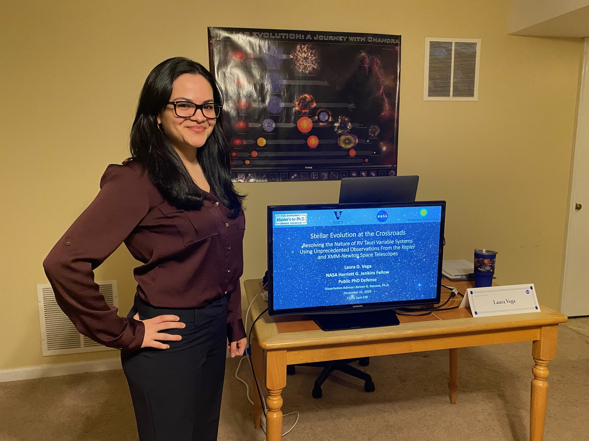
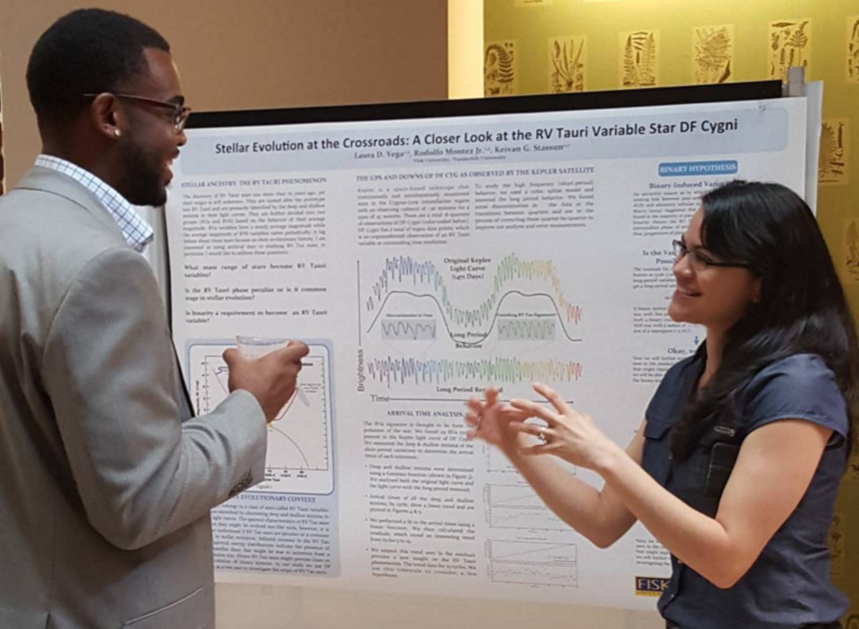

About Me

Image:
Home setup for my virtual dissertation defense on December 21, 2020.
Education:
Proud Chicana born and raised in San Antonio, Texas. I am a former recipient of the NASA OSTEM MUREP Harriett G. Jenkins Predoctoral Fellowship (read more about Dr. Jenkins here). I am a first-generation college graduate. I obtained my Bachelor of Science degree in physics from the University of Texas at San Antonio (December 2013). I am a former student of the Fisk-Vanderbilt Master’s-to-PhD Bridge Program, where I earned a Master of Arts degree in physics from Fisk University (May 2017) and a PhD in astrophysics (March 2021), advised by Dr. Keivan Stassun, at Vanderbilt University and mentored by Dr. Rodolfo Montez Jr. and Dr. Padi Boyd.
Interviews:
"First a Bridge Program Graduate, Now a NASA Astrophysicist" | APS News , January 2023.
Early Career Spotlight | NASA Sciences and Exploration Directorate , October 2022.
"Ver Oportunidades En El Fracaso Y Persistir" | Animal MX , September 2022.
Alumni Spotlight | UTSA College of Sciences , December 2020.
Research

Image:
Sharing my research with my buddy and Biomedical Engineer, Isom Kelly, at the Fisk-Vanderbilt Bridge Program’s Research Celebration Day, August 2015.
Publications: ADS Listing
Current Project: Simultanous Multiwavelength Observations of M Dwarf Stars
 The gif shows an animation, and TESS light curve, of a well know M-dwarf star AU-Mic, showing star spot modulation and flares. Credit: NASA's Goddard Space Flight Center/Chris Smith (USRA)
The gif shows an animation, and TESS light curve, of a well know M-dwarf star AU-Mic, showing star spot modulation and flares. Credit: NASA's Goddard Space Flight Center/Chris Smith (USRA)
Most M dwarfs exhibit high levels of activity in the form of flares and coronal mass ejections due to magnetic reconnection processes.
This energetic activity may subject planets, orbiting around them, to significantly more radiation than we receive from the Sun.
Just how much this affects a planet’s potential habitability remains unclear. My team and I are using ultraviolet and X-ray observations from Swift,
combined with simultaneous TESS 20-second cadence optical data, as well as with X-ray observations from NICER,
to proving valuable information about our understanding of flare physics. Using such high-cadence data has allowed us to more accurately
assess flare energy partition and estimate the overall energy output of a flaring star, allowing us to investigate relationships between
optical, UV, and X-ray activity for low mass stars and their effect on planet atmospheres.
Dissertation Project: RV Tauri Variables
 The gif shows an animation, and AAVSO light curve, of the second brightest RV Tauri variable, U Monocerotis,
a system of a pulsating post-AGB star and smaller stellar companion orbiting each other within a large circumbinary disk of dust. Credit: NASA’s Goddard Space Flight Center/Chris Smith (USRA/GESTAR)
The gif shows an animation, and AAVSO light curve, of the second brightest RV Tauri variable, U Monocerotis,
a system of a pulsating post-AGB star and smaller stellar companion orbiting each other within a large circumbinary disk of dust. Credit: NASA’s Goddard Space Flight Center/Chris Smith (USRA/GESTAR)
The light curve shows the evolved star's deep and shallow minima due to pulsations,
as well as the pulsating star being eclipsed by the disk, also known as the RVb phenomonon.
RV Tauri variables are luminous pulsating supergiant stars (~10^3 Lsun) with pulsation periods between ~20--150 days and extend the period--luminosity relation
of Type II Classical Cepheids. In addition to pulsational variability, a subset of RV Tauri stars (the RVb-type) exhibits a longer periodic modulation in brightness
ranging between ~470 and 2800 days. It has been argued that RV Tauri variables are a subclass of post-asymptotic giant branch objects, evolved from low-to-intermediate mass stars.
However, their evolution is not so simple. The majority, if not all, are in binary systems surrounded by a circumbinary disk. Though binarity has been shown to play a key role in
the dynamics and evolution of these old systems, the interconnection between the various physical processes remains poorly understood. My dissertation focused on the
multiwavelength observational analysis of two archetypal RVb systems, DF Cygni and U Monocerotis.
In these two systems we found evidence for disk obscuration,
binary interaction, and disk evolution. I also showed how ultraprecise Kepler telescope observations of DF Cygni,
the only RV Tauri system in Kepler's original field-of-view, demonstrates that the periodic photometric RVb phenomenon
is linked to disk obscuration of the pulsating star. I also introduced observations spanning the largest coverage
of the electromagnetic spectrum (X-ray to millimeter) and longest temporal baseline of the RVb system U Monocerotis,
which also becomes the first RV Tauri system detected in X-rays, using XMM-Newton.
This has opened new possibilities for considering X-rays in forthcoming studies
to place further constraints and a deeper understanding of magnetism and accretion
of these evolved binary systems.
Contact
Email:
laura.d.vega@nasa.gov
ldvega@umd.edu
Address:
Exoplanets and Stellar Astrophysics Laboratory
NASA Goddard Space Flight Center, Mail Code 667
8800 Greenbelt Rd.
Greenbelt, MD
20771
USA